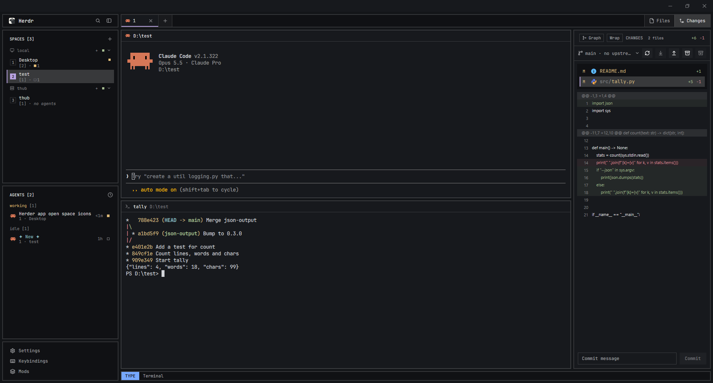

TUUXIC
LAYOUT
A TUI look, without the
TUI.
The clean grid and
monospace
feel of a terminal app, with the comfort of a real window: mouse, popups and smooth panels where you want them.
HERDR LAYOUT
github.com/
Tuuxic/herdr-tuuxic
